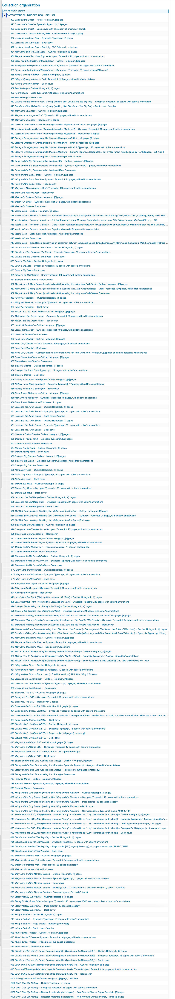

DSC #17: Cadence’s Archives Mystery#
by Cadence Cordell
September 21, 2022
 https://doi.org/10.25740/sd796vb8535
https://doi.org/10.25740/sd796vb8535

Preface (Quinn)#
If it weren’t for the fact that my friend Shannon Supple is the curator of the Ann M. Martin Papers at Smith College, I never would’ve read the blog post that kicked off a series of events in Las Vegas in 2019 that led to me founding the Data-Sitters Club. The Ann M. Martin Papers have been part of the project since the beginning, and we imagined a summer 2020 DSC Super Special where Roopsi and Maria would visit Smith College together and explore the archives. (Who are the Data-Sitters, you might be wondering? Check out Chapter 2.)
Obviously, that didn’t happen. What’s more, between the pandemic and a renovation, Smith Special Collections was closed to external visitors until this summer. A road trip for the Data-Sitters wasn’t in the cards, but as luck would have it, I’d made the acquaintance of a wonderful second-generation digital humanist[1] whose college funded internships — and she was looking for a project at the intersection of libraries and digital humanities.
And that’s how the Data-Sitters Club got its first Junior Officer, Cadence Cordell. Cadence has short strawberry blonde hair, blue eyes, and glasses. She’s working towards a Bachelor’s Degree in History and Spanish at Mount Holyoke College and plans to pursue a Master’s degree in library science after she graduates. While she didn’t grow up reading The Baby-Sitters Club (instead obsessing over Percy Jackson, Harry Potter, and other fantasy and sci-fi series), she strongly relates to Mary Anne’s quiet, shy personality; organization skills; and tendency to cry a bit too often.
We didn’t subject her to hazing like the Baby-Sitters Club did to their first Junior Officer, poor Mallory Pike. But we did inflict on her our tendency to get lost in free-association rabbit-holes when we’re all together on Zoom, and we left a million excited comments and emojis all over the Google Doc where she shared her notes.

Experiencing the Ann M. Martin papers by proxy wasn’t quite the same as being there, but with Cadence’s help, it was almost as good. She’s written up her experience in the archive in this book — DSC 17: Cadence’s Archives Mystery. If you’ve never spent time in an archive, get ready to take notes: Cadence has you covered with how to plan, what to do, and how to get past the fantasy of The Archives to get the most out of the reality of what archives are really like (at least in a North American context).
Meet Cadence#
Hi! I’m Cadence, she/her pronouns, and I’m currently an undergrad at Mount Holyoke College majoring in History and minoring in Spanish, with an interest in DH. I’m planning on pursuing a Master’s Degree in Library Science once I graduate (though I can’t dwell on that too long, otherwise I’ll start overthinking the application essays I need to start writing), and I was SO excited to be a guest Data-Sitter for the summer!
As you might have guessed from my intro, I am pretty new to DH work. My first exposure to it — and the Data-Sitters Club — was through Quinn. In early June of 2020, Quinn reached out to ask for help migrating the Modernist Archives Publishing Project from Drupal 7 to Backdrop (which was a wonderful distraction from COVID anxieties at the time), and the topic of the Data-Sitters’ Club came up. Quinn mentioned they were interested in finding an intern to look into the Ann M. Martin papers at Smith College, and as it so happens, Smith College is only a half-hour drive away from Mount Holyoke. I was interested in learning more about DH and especially excited by the prospect of archival research. Research in general has always been my favorite part of academic work (something that’s especially prominent when I’m working at my library’s circulation desk and someone comes by asking for research help — I always have to rein myself in and remind myself I’m supposed to refer students to the Research Help Desk, not start combing the database!), and archival research was new ground I was ready to break into. Two years later, after an independent study that would serve as my crash course into DH and some wrangling with my college for funding, the stage was set for my summer internship at Smith College’s archives.
Another fun fact: I’m also new to archival research. As in, this internship was my first time properly sitting down and researching in an archive. I had a vague sense of what to expect on my first day in the archives, but I didn’t have much of a plan going in. I didn’t have much prepared in terms of notes of what materials I wanted, I had little to no idea what to expect, and I didn’t yet know what skills I would be drawing on as I pulled my first boxes from the archive. And part of this is certainly due to experience. Your first time in an archival setting is going to shape how you approach later research, and the only way of really getting used to that sort of work is to sit down and do it. But I also think a lot of first-time archival researchers aren’t prepared for what archival research will be like — in my experience, research seminars for undergrads typically help students learn to research for secondary sources in a library’s collection, and don’t include any perspective on what archival research might be like. And by the time students are ready to start working on their own research questions and interests — questions and interests that require some archival research — it’s assumed they know how to research both in a library’s general collection and in their archives despite the two experiences being vastly different, as I would soon find out.
Research questions (an aside from Roopsi)#
This assumption, which I have made myself as a professor, is generally terrible. When students in the humanities are doing research for the first time, they often come with a preconceived hypothesis that they are looking to prove with material they find in the archives. (“I want to do a project on how Salem State” — my former institution — is “Miskatonic University in H.P. Lovecraft’s work” or “I want to show that the first generation of immigrants to Salem became slumlords”). I’m not sure why this is the case, but I suspect it’s that the primary framework for research that our students receive before college is the Scientific Method High School EditionTM, which is heavy on the hypothesis. (Of course, true scientific method involves a few steps before hypothesis, but you wouldn’t know it from those tri-fold science fair posters.) I ended up developing a bootcamp on archival research for my students to reorient their thinking and foreground a process of discovery when working with archival material, where the primary argument of a project comes out of starting broadly with a topic, exploring material, then iteratively forming and re-forming research questions.
Welcome to the Archives#
My first experience with archival research began early in May 2022 as I arrived at Neilson Library with a vague sense of what I’d be doing that day — getting oriented in the archive, sitting down with some boxes of materials and rifling through them for the next seven hours. The first steps were as expected — walking in, filling out some paperwork about what I was researching and how to handle materials, getting acquainted with the Special Collections staff, and so on. Most of my stuff had to be left outside the reading room. Only computers, chargers, phones, pencils and notebooks are allowed in the room. (You might notice water bottles weren’t allowed in. Stay hydrated, folks.) I didn’t need to grab white gloves to wear while handling resources — an image and myth commonly associated with archives — though I did see some other researchers having to use them for specific materials, so the myth isn’t completely unfounded!
Anyway, I walked into the Reading Room and got settled. The Reading Room was gorgeous —Neilson Library had recently been redesigned and rebuilt, and the Reading Room is an open space with tables arranged in a loose semi-circle with a wall of windows on one side. It was a lovely space to work —- far from the dimly lit, dusty spaces films and TV like to portray archives as.

I sat down at one of the tables, opened up my computer, and was faced with my first question: How did I pull materials from the archives? How did I even figure out what to pull in the first place?
Great question! Let’s talk about finding aids.
Finding Aids#
Finding aids are descriptions of everything contained in a group of archival materials or a collection, primarily focused on the collections’ metadata: all the different types of materials in a collection, the dates of the materials, who created them, copyright terms, languages used in various materials, and so on. It’s how you can get a sense early on about what materials and sources might be in the archives — but we’ll come back to the “might” part in a second. For now, let’s posit that the finding aid we’re interested in is 1) accurate and 2) detailed. These are, as you might guess, pretty hefty assumptions to be making, but we’ll stick with them for the next few paragraphs.
It’s important to note that the search databases for archival collections (if they exist!) usually aren’t part of the more general library search engines — they’re their own separate database. Depending on how buried the link to the finding aid search engine is, it might take some searching to find it (or you can reach out to the resident archivists you’ll be working with before you start your research —it’s always good to start forming these connections early on!). When you find the finding aid search engine, type in the name of the author or collection you’re interested in and pull up the finding aid. The look of the finding aid will differ from college to college, but here’s the one for the Ann M. Martin papers:

Awesome! Now that I have a finding aid, I can decide on a box to pull. On the right side of the finding aid, there’s a pull-out section with two useful features: a search bar to help navigate through the collection if you have a particular source or keyword in mind, and a “Collection Organization” section dividing Ann M. Martin’s work into different series and mini-collections of materials. Let’s start by seeing what materials are included for the main series of BSC titles. I click on the drop-down menu, “BABY-SITTERS CLUB BOOKS (BSC), 1977-1997,” and…

Hm. That’s a lot of materials.
Here’s the thing: depending on the size of the collection you’re looking at and your familiarity with navigating finding aids and archival collections, just searching the finding aid for materials you might be interested in can be overwhelming. The Ann M. Martin Papers has 55 boxes in the collection — and while I was never going to look through all of them, the amount was enough to jolt my anxieties for a good couple of minutes before I managed to refocus and pick a few to start with. Depending on what your research is, the collection you’re interested in might be relatively small or large. In both cases, the best way to prevent some early archival anxieties is to try and look at the finding aid and pick out materials to look at first before walking into the archives for the first time. Figure out what materials sound like they might apply to your research questions, list what boxes you are and aren’t interested in, and get yourself organized. Reach out to the archivists on staff and talk to them about what you’re researching and what specific collections you want to look at — they are the experts on the collections, and you shouldn’t overlook them as resources. They certainly know what’s in the archive better than you do. All of these methods should keep you from getting overwhelmed before you even set eyes on any archival sources (especially if your collection’s finding aid isn’t as detailed as that for the Ann M. Martin papers — but I’ll come back to this a little later).
In my case, I ended up picking Boxes 25 and 26, which contained the keywords “BSC Bible” and “French translations” (which have both been questions of interest to my fellow Data-Sitters — see the Multilingual Mysteries series for more on the French translations, and DSCM #2: Beware, Lee and Quinn! for more on the BSC Bible.) Now to take a quick breather after the early finding aid anxieties while waiting for my boxes and beginning the deep dive into my research.
But before that — we need to manage some expectations.
Archives: Fiction vs. Reality#
It’s a commonly held hope that when we start researching in the archives we will be the researcher to find something new and amazing in the archive that will profoundly shape our research, innovate within the field, be a new great historical finding, and so on. Pop culture loves to perpetuate this myth. I only lurk on social media, so I got both my parents to poll Facebook and Twitter for examples of moments when a protagonist delves into a library or archive and finds what they were looking for almost immediately. My first thought was of a bad Hallmark Christmas movie where the heroine finds the key piece of evidence to protect a historical building buried in the archives (A Winter Romance, if y’all are also into that sort of film), but it’s a cross-genre phenomenon. Here’s a (very condensed) list of some examples:
Buffy the Vampire Slayer. Like every episode.
Avatar the Last Airbender, specifically the episode “the Library” where the heroes are in a massive library and find the key piece of info about defeating the Fire Nation in the course of a 30 minute episode
Harry Potter
Thor 2
Captain Marvel
National Treasure and National Treasure Book of Secrets
Star Wars Episode 2: Attack of the Clones and Rogue One
Stranger Things, Seasons 1 and 4
The Da Vinci Code, as well as most Dan Brown books
A Discovery of Witches
The Nancy Drew TV show
Squid Game
Supernatural
Lord of the Rings
My Little Pony: Friendship is Magic
And many more! (I was linked to the site Pop Archives while working on this list, which looks at appearances of archives and archivists across pop culture mediums. I would highly recommend it if you want to go down the rabbit hole and learn more about how pop culture portrays the place and the profession!)
With all of these films and TV shows reflecting similar myths of archival research, you’d hope real life archival research is a similar experience. Unfortunately, the above scenarios are pretty unlikely. When it comes to archival research, you should expect more along the lines of these two scenarios:
a) there is not much in the archives in the first place; or
b) there’s a TON of sources in the archives, and the vast majority of them are not related to your research question or interests.
More likely than not, there’s not going to be something new and exciting you’ll discover in the archives. And that’s okay! Archival research doesn’t have to reveal new and exciting information for your research to be valuable. But it also means that you shouldn’t get too frustrated if you can’t find what you were hoping for. Archives, in general, are a mixed bag — sometimes they have exactly the sort of materials you were hoping for, and sometimes they don’t hold much at all. What’s important is to manage your expectations, be flexible, and (if your collection is on the larger side)…
Get ready to do a LOT of skimming.
An aside from Roopsi on discovery#
I don’t want to be that person (okay, I AM that person) but you’re probably not going to “discover” anything in an archive. Scholars have a tendency to discuss what they “discovered” in archives, implying that they magically found something. This obscures the labor of archivists and special collections staff who accessioned collections, processed them, and created the finding aids that made your “discovery” possible.
Skimming#

Skimming is probably the most important skill you’ll need to develop while researching archival collections. No joking. And while this is partly due to not everything in the collection applying to your research questions, it’s also due to time constraints on your research. I’m lucky enough that my internship is about two months long — plenty of time for me to work through the Ann M. Martin papers without stressing about getting to everything the DSC is interested in. Most researchers aren’t that lucky. Depending on the funding involved and what the academic calendar for your institution looks like, it’s more likely that your research period will be between a week or two to a month. Skimming will be a necessity, if only so you can sort through all the materials and have ample time to focus on the sources that do matter for your research. And, secondly, well, you remember that assumption we made earlier that the finding aid is 1) accurate and 2) detailed, and 3) generally is the best way to give you a sense of what “might” be in the archives?
We’re finally coming back to that assumption and dismantling it, and in doing so, we’re going to talk about another reason why skimming is so important: because, even with a finding aid, you really have no idea what’s in the archives until you start combing through it.
Let’s switch tracks for a minute and talk about a different collection at Smith College — the Martha Tolles papers.
Most of you probably aren’t familiar with Martha Tolles. Neither was I, up until this internship. She published her first book, Too Many Boys (later retitled Katie and Those Boys) in 1965, and wrote primarily children’s and YA lit for Scholastic (a premier publisher of children’s literature). Recently, she began writing adult fiction, with her latest book Love and Sabotage published in 2018.
So what’s her connection to the Baby-Sitters Club series?
Two things! First, in 1985, Tolles would publish the book Katie’s Baby-Sitting Job, a mystery book in which the titular heroine Katie must clear her name after she is accused of stealing valuables from a client she’s baby-sitting for. This title is reputed as the inspiration for the Baby-Sitters Club series, as one of Scholastic’s editors noted the book’s popularity and realized there was an untapped market of books about baby-sitting. Second (in another instance of coincidence), Martha Tolles is also an alumnae of Smith College, and she has also donated a collection to the archives. With all of this good fortune on our side, the DSC decided to take a look at her collection in the archives, both to try and find more potential connections between Martha Tolles’ work and the Baby-Sitters Club, and to compare the collections and their organization more generally.
With all this in mind, let’s pull up the finding aid for the Martha Tolles’ papers and see what we’re working with.


First thing to note: this finding aid isn’t detailed, at least not to the level of detail we saw in the finding aid for the Ann M. Martin papers. In fact, it looks extremely vague — the “Collection Organization” section in particular does not say too much about exactly what is in each box or folder. It describes very general categories: notes, manuscripts, correspondence, news articles, etc. But hey, there are only five boxes in the collection, so it can’t be too bad — right?
… well. This is just Box 2 in the collection, and mainly contains materials related to the “Katie” books — and it’s packed.

So, coming back to the finding aid — sometimes, it’s not going to be accurate or detailed. The Martha Tolles papers are the perfect example of this. Not only does the finding aid fail to capture the sheer amount of stuff in the archive, but it sometimes logs what and where things are incorrectly. This box, for example, is Box 2. According to the finding aid, it should contain most of the materials for her “Darci” series. In actuality, this box contains pretty much only materials related to her “Katie” series of books. And this isn’t to say the Ann M. Martin papers are better organized or more accurate (I found a book synopsis for BSC Super Special #2, for instance, that was mislabeled as the synopsis for Super Special #1). The Martha Tolles papers, visually, helps convey why the finding aid is a useful starting tool, but not a great guide overall — not all finding aids are super detailed, and there will always be some inaccuracies you have to contend with. It also demonstrates, once again, why you need to get really, really good at skimming — because depending on what your collection looks like and how detailed the finding aid is, you might have to skim through everything in the collection to find exactly what you’re interested in. This is not due to poor archival organization, either. Shannon Supple, the curator for the Ann M. Martin papers, explained to me that many archives follow a principle called “respect des fonds,” or organizing a collection similarly to how the author organized the collection before it made its way into the archives. It’s a principle meant to ensure the integrity of a collection, so a collection is altered or tampered with as little as possible throughout its lifespan, but it also means a collection can be poorly organized. Even if you do have that detailed finding aid guiding you on where the useful materials are in a given collection, skimming through everything can help you find those interesting details and questions the finding aid doesn’t mention.
Returning to the Ann M. Martin papers and its detailed finding aid — it says a lot, but not everything. For a specific example, the finding aid notes that Folder 18 in Box 25 is a piece of correspondence from Jean Feiwel (an editor at Scholastic) to Ann M. Martin, written May 6, 1985. It doesn’t say what the correspondence is about though — and skipping over it means you would never find out that the character Stacey had a secret that was changed early on in the editing process for the first couple books for being “too heavy.” The correspondence even mentions the secret being changed to something more personal like diabetes, which — hey, that’s exactly what Stacey’s secret ended up being in the final product! What was the initial secret? No idea, but it’s a question I wouldn’t have thought to ask if I hadn’t skimmed the correspondence in the first place. Or, in another instance Box 3, Folders 34 and 37 contain early outlines of different BSC titles. The outlines were not of particular interest to my research, but skimming them was still a good choice, as both folders included not only the handwritten book outlines mentioned in the finding aid, but slips of paper with the publishing schedule for the upcoming set of BSC books. The slips included dates for when the outlines and manuscripts were due and the date the books were set to be published, information that was super interesting and pertinent to my research questions, as well as information that I never would have found had I skipped over the folders altogether instead of skimming them. Research questions should still guide your focus in the archives — that being said, skimming everything you have time for is a good skill because you never know what might be hiding where. A source you’re interested in might be mentioned in the finding aid — or it might be hiding in a place you weren’t expecting.
The Things You Don’t Find#
Though that brings us to another question: what does it mean if you’ve hunted through all the folders, and that source you were interested in looking at just isn’t there? Or, to put it another way: what isn’t included in the archives, and why?
This is a much harder question to figure out, because we have to approach it from the perspective of how the collection made its way into the archives and analyze what the contributor decided to give or not give and why. This answer to this question will vary from collection to collection, so I’m in no way going to cover it in full here. However, this is a very good question to apply to the Ann M. Martin papers. The collection feels very cleaned up, with very little sense of the editing process or communication between editor and author present. The lack of correspondence is especially notable, considering how many of the books were ghostwritten and how often ghostwriters are directly addressed in Martin’s synopses for various titles, yet the only references to these ghostwriters’ involvement are those short notes in the synopses about what events to include or what tone to set in a particular chapter. The drafts and outlines are not heavily edited, and those drafts that are marked up have generally been edited for grammar and spelling, not for plot changes or character shifts. So the question of why these particular materials are here, and not other materials (perhaps more letters or fan mail, or more heavily-edited drafts) is useful to consider.
On the one hand, since the collection was gifted to Smith College by Ann M. Martin herself, the question of what isn’t in the archives could be associated with authorial preference. Maybe there were certain materials the author didn’t want to be seen or wanted to hold onto. Some materials might even have been thrown out over time — it’s not too hard to believe that Martin might have tossed some correspondence because it was no longer relevant (that’s certainly my train of thought when I decide to clean out my desk every couple of months). However, personal preference is, in my eyes, the easy way out (as well as feels a bit mean-spirited — like yelling at the donator for not having the foresight to know where every scrap of correspondence and draft materials would end up in the next 50 years).
There are other reasons behind why the Ann M. Martin papers feel so clean, and it’s in no way all due to authorial preference.
For example, a good portion of correspondence that is included in the Ann M. Martin papers are faxes, mostly printed on thermal paper. In case you haven’t seen or used thermal paper before, one of the first things you might notice is how fragile the paper feels. It’s a thin, waxy paper, and feels easy to rip, and it’s extremely sensitive to heat, light, and various chemicals, including more common ones found in markers or cosmetics according to the National Archives. Ink also smudges and fades easily on fax paper, which can make sources difficult to read and equally difficult to archive. Considering all this, the form of technology a source was produced on can be a reason for archival absence. Materials used to communicate some form of information, particularly paper, are not designed to last for all that long, and certain types of paper can decay faster than others. Light exposure, decay, pests, chemical exposure, and so on risk deteriorating objects, and while archives seek to control such contaminants, archival sources first have to get into the archives before they’re protected. In the case of faxes in the Ann M. Martin papers, these might be the lucky faxes that are still legible enough to save.
Surprisingly, faxes are slightly better off than some of the more recent sources in the archive. While combing through the archive, I found two floppy disks containing BSC-related materials. I emailed Special Collections to get the files on the floppy disks, only to find out that one floppy disk was completely unreadable. The other disk was accessible, but even though I had the files, they didn’t work with any software on my computer. I texted Lee and Quinn with the new problem of accessing these files, and Quinn asked around and learned from Anastasia Salter (see DSC 16: Anastasia’s Secret Language) that they were readable (if slightly wonky) if they were given the .txt extension.
These floppy disks and the problems accessing their data are not unique — archives across the world are facing the same issue of how to archive digitally-borne materials. The Ann M. Martin papers reflect a YA book series created during the shift to the Internet, yet that shift is near impossible to notice in the various papers and manuscripts. The only signs of it happening are several floppy disks and one printed email in the papers. The absence of more digital data is possibly due to a lack of digital materials to begin with, as the archives themselves suggest Ann M. Martin and her editors mainly communicated through faxes. It’s possible Martin never intended to donate such materials in the first place, so when she did decide to turn them over to Smith’s Special Collections, she didn’t have much digitally-born material to give. There is also the less-likely possibility that the lack of such materials is due to data decay or digital obsolescence (which is covered much more extensively in DSC 16). Simply put, there is a chance that by the time Martin decided to donate the floppy disks, the hardware itself had deteriorated and the files inaccessible, limiting which ones she could donate in the first place. However, all this is supposition. Without interviewing Ann M. Martin and asking about how she wrote the books, when she started using a computer to write them, and why she donated these specific digital materials over others, we can’t draw any final conclusions about how and why the materials ended up in the collection.
When it comes to digital data in the archives, there is the risk of it becoming inaccessible — not due to digital obsolescence or decay, but something simpler: software changes. As in the case of the files on the one working floppy disk from the archive, digital data is usually tied to specific versions of programs or software. If that software is updated, or if it becomes obsolete and a different software takes its place, you can still lose the means to read those files. And that doesn’t even touch on the transience of anything on the Internet. The vast majority of the early internet is gone (most scholars now refer to this period as the digital dark age because of how little historical info we have about the early internet and digital interactions), and projects to try and archive the Internet didn’t start until the late 1990s to early 2000s (the Internet Archive, for example, began in 1996). Furthermore, it’s pretty easy for things to be deleted off the internet —if a site like the New York Times shut down tomorrow, its online footprint would be saved on archives like the Wayback Machine and through other new technology, but it would still become much harder to access just by virtue of the steps people have to go through to find it (they have to know where to find these archives in the first place, for a start). Its servers could potentially be saved for archival purposes, but that brings us back to the fragility of such forms of technology.
Emails in particular are difficult to save and recover. Think about how many emails you send over the course of a week, whether for work or school or to keep in touch with family or friends. If you needed to archive them, how do you figure out what’s worth saving and what isn’t? How many have you deleted because you thought they were no longer important and were trying to clean out your inbox? Archives in particular can’t afford to screen everything they receive — it’s a massive expenditure of time and manpower that tends to lead to massive backlogs of materials needing to be archived. Many libraries today working to archive digitized materials like emails are still struggling with backlogs and how to gauge what is and isn’t worth keeping. And what if you want to retrieve emails you deleted to be archived? Most emails you delete are permanently gone after only a few weeks or a couple months. After that point, there’s little to no chance of recovery. The early internet is a prime example of this — the vast majority of emails from this period are gone or inaccessible, with little to no record that they even existed. In this context, it’s maybe even more surprising that there’s even one printed email in the Ann M. Martin papers, considering it was written in 1998. In the context of almost all emails from that time period being permanently inaccessible or deleted (both from the internet and from servers), its survival is impressive to say the least.
Digital archiving (an aside from Quinn)#
The fragility of everything digital has struck close to home for me this year with Saving Ukrainian Cultural Heritage Online (SUCHO). As a grizzled old DH person who’s seen (and… um… maybe also caused) more than one person’s share of data disasters, I was caught off-guard by journalists’ surprise at what struck me as an obvious point: there’s no magic backup out there. Just because “it’s online” doesn’t mean it’ll be online tomorrow, or that there’s necessarily more than one server out there with that data.
The Internet Archive does an absolutely heroic job (check out my high school International Baccalaureate notes!), but they don’t catch everything everywhere – and the more out-there it is (things like personal websites, fanfic, or other personal creative projects), the less likely it is to be picked up, especially if it’s not connected into the English web. Even what we might think of as fairly mainstream (and English-language!) stuff like Scholastic’s website with book-related materials for teachers, or authors’ websites with contextual material for their publications, aren’t necessarily captured in their entirety.
Website maintenance (an aside from Roopsi on Quinn’s aside)#
Content in the Internet Archive is also only as good as the efforts of webmasters to maintain sites. The Internet Archive might be doing its job but if a webmaster lets a domain lapse, it’s going to be archiving advertisements for Christian Singles.
Digital archiving (more from Quinn)#
And we’re talking here about the public web, where there’s at least the hypothetical possibility of thousands of random strangers pulling out old laptops, random servers, and Raspberry Pi devices to create distributed web archives like we did for Ukrainian cultural heritage websites with SUCHO. What we couldn’t just archive was anything that wasn’t publicly online to begin with, though we were able to connect with a number of archives and provide them with space to upload internal files and anything else they needed.
But think about it: a similar problem gets repeated at micro-scale for everyone online. If you make a website, there’s a decent chance it’ll be picked up by the Internet Archive. Your tweets are available through Twitter’s API (unless you delete them). But your email? Odds are you use a commercial provider like Gmail, and while they probably won’t accidentally delete it, unless you take steps to download it (and then keep track of – and back up – those files), those emails are probably not going to be accessible at all to your descendents or future researchers… or even to your future self, if we’re talking about institutional email accounts, after you switch institutions.
You almost never see this anymore, but I remember when people would put in their email footer a sentence along the line of “Think of the trees! Please don’t print out this email.” Environmentally, they may have had a point. But archivally? Often, the people who ignored those admonitions are the ones who ended up with the only extant records. A couple years ago, my mother’s best friend moved out of the house she’d lived in for decades, and mailed me a box full of emails I’d sent her as a kid in the 90’s with family CompuServe access. It’s only half of the conversation – I had not thought to do the same with her emails – but it’s a treasure nonetheless, the only early writing of mine (and there was a lot) that survives, other than some fanfic I had printed out and comb-bound.
There’s services for scanning old photos, and getting things digitized is amazing for access and sharing. A copy of grandma’s photo album for everyone! But maybe analog to digital isn’t the only direction we should be thinking of: some things are worth spending a tree or two to ensure they persist.
Surprises in the Archive#
By the end of my internship, I had gone through 18 boxes worth of materials, consisting of the BSC main series, mysteries, Super Specials, California Diaries spin-off series, among other related BSC materials. (Save the Baby-sitter’s Little Sister and The Kids in Ms. Coleman’s Class spinoff series — nobody in the DSC was too interested in those series!) I also went back and started photographing synopses and drafts included in the archives, to be OCRed and used for future DSC books. But the research findings were by far the most engaging and interesting part of my research.
The best sources in the Ann M. Martin papers were the synopses, which are very detailed chapter-by-chapter outlines for ghostwritten books. They appear to have been written as guides for ghostwriters — Ann Martin is careful to note what the tone should be for various chapters or scenes, how the ghostwriter should address various issues (particularly hot-button topics like racism, medical disorders like anorexia and diabetes, bullying, etc.), and where and when the ghostwriter had more freedom to describe a scene or event. I ended up making a detailed spreadsheet tracking instances of prescriptive tone structures, as I and other DSC members were interested in seeing if the tone of various scenes wasn’t unique to each book, but replicable across titles (especially considering the formulaic, 15 chapter structure of the majority of BSC titles).
I also became interested in how Martin sought to control the temporality of the series. Savvy readers familiar with the series will know that the main characters never really grow up throughout the series: Kristy, Stacey, Mary Anne, and Claudia are seventh graders in books #1-#9, then move up to the eight grade in book #10, but never age any further than that throughout the rest of the series, up to Book #131. That’s not super notable. Some readers might notice and get confused or annoyed by the stagnancy of the books and the characters’ ages, but that’s the most of it.
The synopses, on the other hand, called attention to the series’ temporality near constantly. It became common for me to open a folder and, within the first couple of paragraphs, to see Martin warning the ghostwriter not to bring attention to the month or year the title took place in. Is this super useful information? Not really, but it calls attention to a plot hole (or, at best, a plot contrivance), even as Ann M. Martin was very careful with the other logistics of her series — the BSC Bible is the perfect example of her concern with keeping the series internally consistent in terms of its settings and their locations in Stoneybrook, characters and their personalities and relationships, and even the smaller scale temporality in which the events of a specific book took place.
One of the very exciting finds was confirmation of the Chapter 2 / Chapter 3 phenomenon. (To learn more about this phenomenon, check out DSC #8: Text-Comparison-Algorithm-Crazy Quinn). In short, Chapters 2 and sometimes 3 of the BSC books are often critiqued as being highly formulaic descriptions of each club member and the workings of the Baby-sitters Club. The synopses for the books basically confirmed this was extremely intentional, to the point that they are referred to in the majority of synopses as “the Standard Chapter(s)” (confusingly referred to as Standard Chapters 1 and 2, despite usually occurring in Chapters 2 and 3 of most titles) and ghostwriters are told to refer back to previous books in the series when writing those chapters. These terms were established around book #40 and would be used in the rest of the synopses in the archive. The archives further suggest that the standard chapter(s) started out as two distinct chapters: the Standard Chapter 1 would include the descriptions of the BSC members, while Standard Chapter 2 would describe the BSC meeting and the inner workings of the club. By BSC #50, however, the two chapters have been condensed, and all future outlines only contain one standard chapter with both the BSC member descriptions and their club meeting.
Shifting to the spin-off series, those held more surprises. The synopses for the BSC Mysteries in particular were useful, as they typically included a couple of pages of correspondence that spoke to the collaborative nature of the series. Most of the correspondence was from David Levithan (an intern and later editor at Scholastic who worked extensively on the BSC series), sent to both Ann M. Martin and other Scholastic editors, sketching out very rough outlines for various titles. The correspondence confirms that Martin didn’t come up with the ideas for her books alone — writing a Baby-Sitter’s Club book was a collaborative effort between her, her editors, and her team of ghostwriters.
The spin-off series, California Diaries, suggests another potentially interesting question about the making of the series and publishing company’s oversight and influence on what could be written about. One of the characters who features prominently in the spinoff series is Ducky, a 16-year old boy; he is several years older than the female protagonists who hang out in the group often. Initially, this character seems confusing — why would Ann Martin or her editors want to include an older male lead so prominently? It’s a question that goes unexplained in the main series of books, but explained in early editorial notes and synopses. According to the notes, Ducky was meant to be gay and would begin to figure out his sexuality later on in the series. It would have been the first time the BSC books discussed homosexuality and would have been an exciting step forward (especially for a series aimed at 12-14 year olds).
…but it never happened. While Ducky is certainly coded as gay in the final product, and Ducky, Diary 3 hints at his lack of interest in girls, the series ultimately never takes the last step and confirms his sexuality. The absence of the theme feels strange, especially considering how pronounced it is in the early outlines and notes. Ann M. Martin and her editors seemed keen on discussing homosexuality, and there was no sign in other archival documents that they lost interest in the theme. So what happened?
While there’s no clear evidence to suggest why Ducky wasn’t confirmed to be gay in the books themselves, my first line of thought is managerial interference. Martin certainly didn’t shy away from other heavy topics like racism or medical disorders in other BSC books, so sexuality or gender feel like they should fit right in with the other themes. (It’s worth mentioning here that Ann M. Martin herself came out in 2016.) However, LGBT+ themes have frequently been censored in the media — and in children’s media in particular. It would not be surprising to find that Scholastic’s managers or publicity team saw homosexuality as a hot-button topic that would risk sales or was inappropriate for children in a way that other themes weren’t, and for them to crack down on the California Diaries series and on Ducky’s character in particular. It might also have been a concern about bringing in any sexuality, queer or straight, into the series. If you’ve read the BSC series, you know the relationships in it are very chaste, with nothing more extreme than quick kisses, so it was an acceptable series even in many more conservative households. (Though this theory does bring in the subtext of queer relationships as inherently sexual in nature — but that’s a whole other rabbit hole I don’t have time to go down). There’s also the possibility that the series just ended before a book specifically addressing the subject matter was written. However, these are only inferences — short of interviewing someone who would know why this change was made, or finding other archival evidence suggesting why sexuality was never discussed as a theme — we can never concretely say why California Diaries went in the direction it did.
Inferences can be common conclusions in archival research. It’s pretty rare for the archives to definitively answer your questions, and a lot more common for them to produce new ones. There’s a reason new research articles and books are always being produced, and why they can be so heavily critiqued — archival research rarely if ever produces empirical evidence. The conclusions you draw from a source might be completely different from somebody else’s, given your research interests, disciplinary backgrounds and/or approaches, what research you’ve already gathered, and so on. And that’s fine! It’s part and parcel of academic research. Inferences aren’t overstepping your boundaries, so long as they are backed up with solid research and evidence, but necessary in those places where the historical record isn’t complete. And some inferences can be addressed. In the case of the DSC, we were able to find several editors who worked on the BSC series on Linkedin and are hoping to reach out and interview them about some of the many follow-up questions we have about the series. What was Stacey’s initial secret, and why was it changed to diabetes? Why was Ducky never canonically made gay? How was each new book devised and edited — how much of the writing and editing process was Ann M. Martin, and how much of it was Scholastic editors like Jean Feiwel or David Levithan?
Archival research is a rabbit-hole. It’s never going to be wrapped up in a neat and tidy bow, and you will always have more questions than you have answers. That’s the frustration and joy of working in the archives! The work is never done, and there’s always another folder, another box, another archive to look into. There’s no answer to the mystery of the archives — and that’s the fun of it all.
Suggested citation#
Cordell, Cadence. “DSC #17: Cadence’s Archives Mystery.” The Data-Sitters Club. September 21, 2022. https://doi.org/10.25740/sd796vb8535.